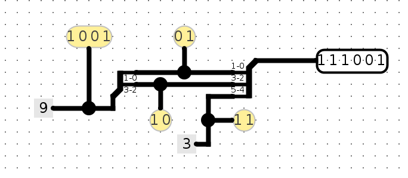
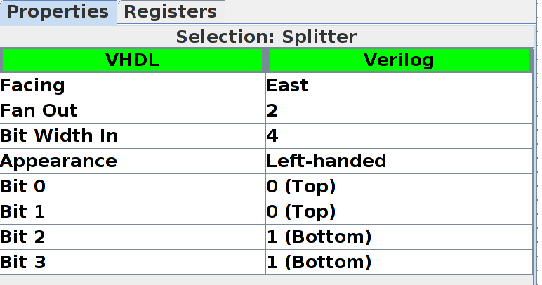
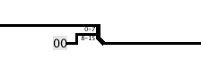

This lab extends topic of the previous lab, obtain files from the same repository.
Feel free to do each part as separate sub-circuits in the same Logisim file.
The following parts will introduce you to more advanced techniques/concepts in Logisim.
Here are three Logisim features that should both save you a lot of time and make your circuits look much cleaner.
Splitters allow you to take a multi-bit value and split it up into smaller parts, or (despite the name) combine multiple values that are one or more bits into a single value. Here, we split the 4-bit binary number 1001 into 10 and 01, then recombine it with 11 into the final 6-bit number 111001:

Click on a splitter to get its menu in the sidebar. You can use this menu to determine the number of arms on your splitter and how many bits should go on each arm. For the circuit above, the left splitter's menu looks like this:

While the right splitter's menu looks like this:
Notice that there's an option called facing. You can use this to rotate your splitter. Above, see that the splitter on the right is facing West while the splitter on the left is facing East.
If you see an error wire that is orange, this means that your bit width in does not match your bit width out. Make sure that if you're connecting two components with a wire, you correctly set the bit width in that component's menu.

A tunnel allows you draw an "invisible wire" to bind two points together. Tunnels are grouped by case-sensitive labels give to a wire. They are used to connect wires like so:

Which has an effect such as the following:

Some care should be taken as to which wires are connected with tunnels to which other wires, such as in this case:

Which in turn has the following effect:

We strongly recommend you use tunnels with Logisim, because they make your circuits much cleaner looking, and therefore easier to debug.
When changing the width of a wire, you should use a bit extender for clarity. For example, consider the following implementation of extending an 8-bit wire into a 16-bit wire:

Whereas the following is much simpler, easier to read, and less error-prone:

Additionally consider the case of throwing out bits. In this example, an 8-bit wire is being converted into a 4-bit wire by throwing out the other bits:

Despite the implications of its name, a bit extender can also do this same operation:

We're going to construct a circuit that manipulates an 8-bit number.
Complete the following steps to create the splitter circuit, and show this to your TA (remember to save). When you've completed the circuit, answer the question in the checkoff session.
File->Open->ex4.circ) and go to the empty Split circuit.Go to the Wiring folder and select the Splitter circuit. This circuit will take a wire and split it into a set of wires of smaller width. Conversely, it can also take many sets of wires and combine them into one.
Change the Bit Width In property (bus width) to 8, and Fan Out property (# of branches) to 3. Your splitter should now look as follows:

Now, select which bits to send out to which part of your fan. The least significant bit is bit 0 and the most significant bit is bit 7. Bit 0 should come out on fan arm 0, bits 1, 2, 3, 4, 5 and 6 should come out on fan arm 1, and bit 7 should come out on fan arm 2. FYI: the None option means that the selected bit will not come out on ANY of the fan arms.
Route In1 to the splitter. Attach a 2-input AND gate to fan arms 0 and 2 and route the output of the AND gate to Out1.
Now, interpret the input as a "sign and magnitude" number. Place logic gates and other circuits to make Out2 to be the negative "sign and magnitude" value of the input. Sign and magnitude is an alternate way of representing signed values - like 2's Complement, but simpler! The combinational logic should be straight-forward.
We will need another splitter to recombine the fans into a single 8-bit bus. Place another splitter with the proper properties (Bit Width In: 8, Fan Out: 3, correct fan widths). Play with the Facing and Appearance properties to make your final circuit as clean-looking as possible.
ex4.circ to your TA.With your knowledge of splitters and your knowledge and experience with multiplexers, you are ready to implement a non-trivial combinational logic block: rotr, which stands for "Rotate Right". The idea is that rotr A,B will "rotate" the bit pattern of input A to the right by B bits. So, if A were 0b1011010101110011 and B were 0b0101 (5 in decimal), the output of the block would be 0b1001110110101011. Notice that the rightmost 5 bits were rotated off the right end of the value and back onto the left end. In RTL, the operation would be something like R = A >> B | A << (16 - B).
Implement a subcircuit named rotr with the following inputs:
A (16-bit), the 16-bit input to be rotatedB (4-bit), the rotation amount (why 4 bits?)
You can find the starter subcircuit in ex5.circ.The output should be A rotated right by B bit positions, as outlined above. You are NOT allowed to use Logisim shifters in your solution, though all other combinational logic (MUXes, constants, gates, adders, etc.) is allowed. Logisim's built-in MUXes (find them under the Plexers menu) might be especialy helpful. Your solution shouldn't involve a clock or any clocked elements, like registers.
Hint 1: Before you start wiring, you should think very carefully about how you might decompose this problem into smaller ones and join them together. You should feel very free to use subcircuits when implementing rotr. If you don't, expect to regret it.
Hint 2: Just because we gave you an RTL representation doesn't mean it's the best way to look at this problem. Think about the input bits of B and think about how to effectively use splitters! Can you do something with the binary form? Remember why binary is good for use in computers: a 1 is easy to represent as an ON signal, and a 0 is easy to represent as an OFF signal. Let's say we want to rotate 9 times. 9 is 1001 in binary, or 1*8 + 0*4 + 0*2 + 1*1. Can you use this to make a cleaner circuit? Making use of the rot* circuits we have provided is a good idea that will keep things clean!
rotr circuit and verify that it works. The testing is the same as Lab 5.